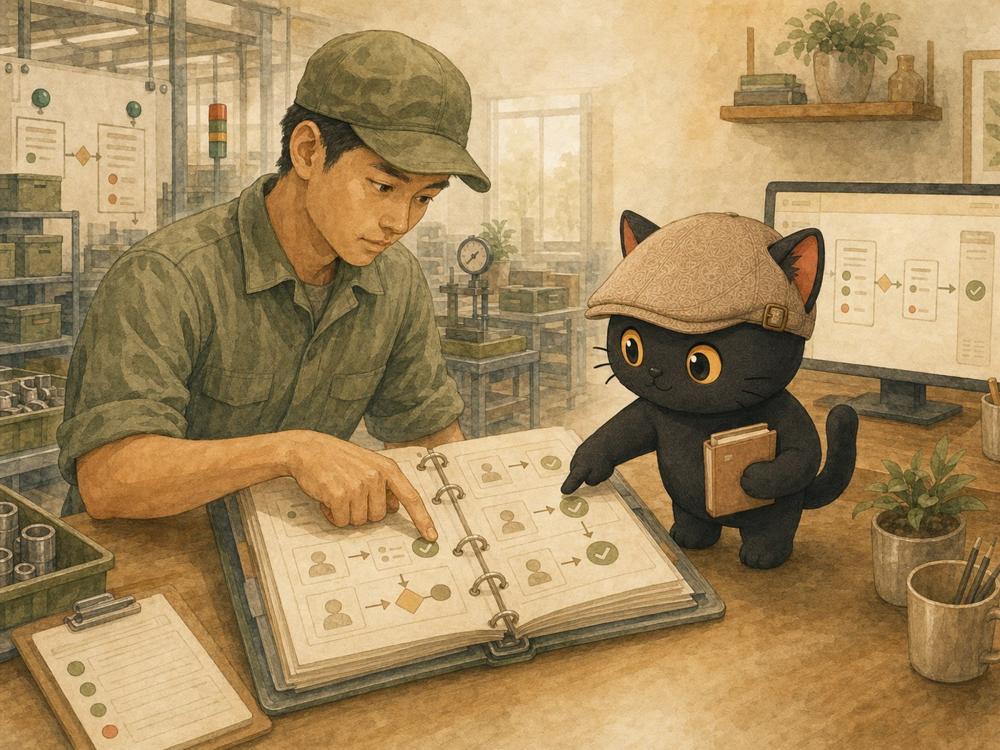
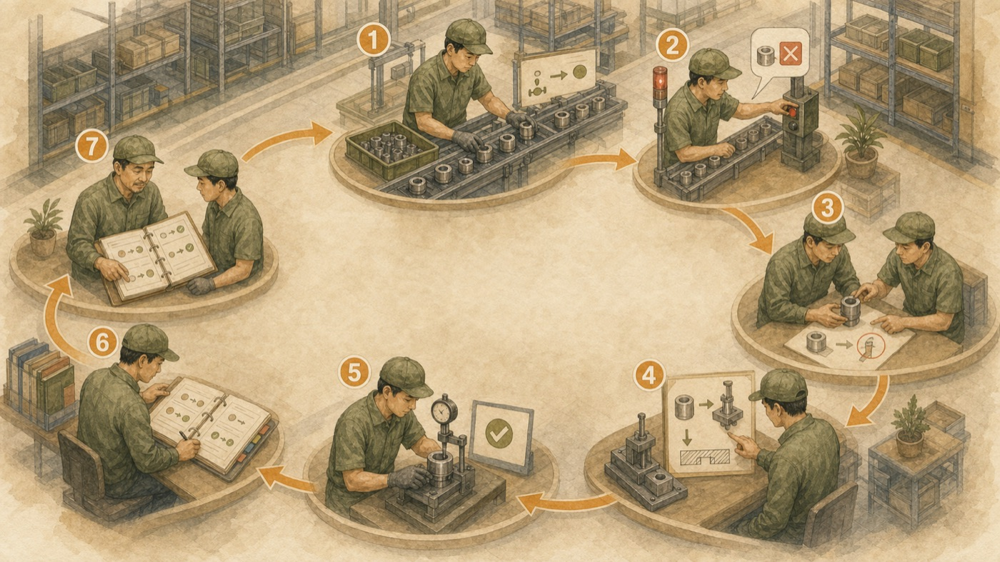
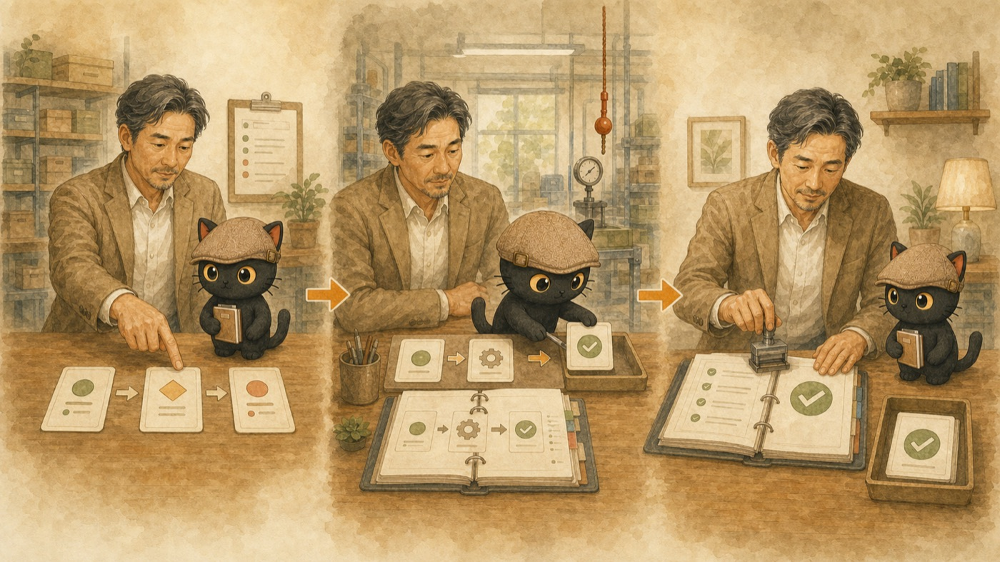

很多經營者問我，公司要開始用 AI，是不是得先派人去學一整套全新的技術。我的觀察是，多數企業其實不缺這個底子。你過去管人、管流程、管品質累積下來的管理知識，本來就能翻譯成管理 AI 的方法。這篇用製造業很熟的豐田生產方式（TPS）當例子，示範怎麼把一套成熟的管理知識，對應成 AI 可以照著跑的流程。
- 正在評估要不要導入 AI，卻覺得「這是工程師的事，我得從零學起」的經營者或主管
- 手上已經有一套管過人、管過流程、管過品質的經驗，想知道這些經驗放到 AI 上還算不算數
- 想讓團隊一起用 AI，不只是自己會用的決策者
- 一個把「你既有的管理知識」對應成「AI 可用流程」的思路
- 一張可以照著做的翻譯檢查表
- 不用先招工程師、不用先買一堆系統，也能先動起來的第一步
先講結論
你不必為了用 AI，把自己重新練成一個工程師。管 AI 這件事，本質上是組織管理的延伸。你已經有的管理知識派得上用場，差別只在於，過去你管的是人跟機器，現在多了一種要管的對象，叫 AI。
先把整篇的重點濃縮成一張對照表。左邊是你在 TPS、在產線上早就熟悉的做法，右邊是同一件事放到 AI 上怎麼落地。後面整篇文章，就是在講這張表：
| TPS 的做法 | 對應到 AI 系統怎麼落地（白話） |
|---|---|
| 標準化作業（不只是一份文件，還包含步驟順序、該有的產出、節拍） | 一份團隊跟 AI 都遵守的規則主檔，把工作範圍、步驟、預期產出、不可接受的錯誤都寫進去。我自己是一份叫 AGENTS 的規則檔，所有 AI 都讀同一份 |
| 自働化，異常就停下來處理（安燈拉繩只是其中一種現場做法） | 設一個會自動攔截的檢查點，AI 一做錯或碰到危險動作就當場停下來，不讓錯誤流到下一關。我用的是一種叫 Hook 的自動小程式 |
| 持續改善 | 每次做完就檢討，把學到的東西寫回規則主檔，讓同樣的錯愈來愈少犯 |
| 標準是拿來被改善的 | 那份規則會被新的經驗一直覆蓋更新，舊版本留著當對照，看得到自己怎麼一路變好 |
| 傳給其他人 | 因為所有 AI 讀的是同一份規則，一處改好，全部一起更新，不用一個一個交代 |
我自己這一兩年在做的事，說穿了就是把我腦袋裡的判斷，還有我整理知識的方法，一步一步變成 AI 看得懂、也跑得動的流程。這個過程讓我愈來愈確定一件事：訓練一個 AI 員工，跟訓練一個真人員工，中間的道理是相通的。
一個很多老闆都有的猶豫
我遇過不少經營者，公司運作得好好的，一聽到要導入 AI，第一個反應是往後退一步。理由通常很像：這聽起來很技術，我不懂程式，是不是要先送人去上課、先請一個懂的人、先花一筆錢買系統。想到這裡，這件事就一直停在「之後再說」。
我能理解這個猶豫。但我想先講一個我自己的體會：讓大家停在原地的，常常是一個想法，就是把 AI 當成一個跟過去經驗完全無關的新東西。一旦這樣想，就會覺得凡事都要重頭開始。至於技術，反而是後面的事。
實際上，如果你經營過一個團隊、帶過一條產線、盯過一套品質流程，你手上這些經驗，正是導入 AI 最需要的東西。
我會這樣看：管 AI 靠的是組織管理的底子
把一個新進員工帶到能獨當一面，你會做哪些事？管 AI 要做的，其實是同一組動作：
告訴他標準怎麼做、哪裡不能出錯、出錯了怎麼回報、做完之後怎麼檢討改進，然後把好的做法留下來，教給下一個人。
給 AI 一份清楚的標準，設好哪裡不能出錯、出錯要停下來，讓它跑一輪、看結果、把問題寫回標準，再讓它跑下一輪。

差別在於，員工會自己吸收、自己判斷，你講一次他能舉一反三；AI 需要你把話講得更清楚、更明白，它才接得住。但這正是管理者本來就擅長的事：把模糊的經驗，講成別人能照做的標準。
所以我會說，導入 AI 真正在考的，是你組織管理的底子。這件事跟會不會寫程式，關係沒有想像中那麼大。
拿豐田 TPS 當例子
豐田 TPS 全名 Toyota Production System，中文常翻成豐田生產方式。它本身有兩大支柱，一個是及時化（Just in Time，需要的東西在需要的時候才做、才送），一個是自働化（Jidoka，讓機器跟流程能自己發現異常、馬上停下來，把品質做進過程裡）。這是 TPS 的正統骨架，我不會用一句話蓋過它。
我這篇想從另一個角度看它，就是知識管理的角度。從這個角度看，TPS 除了讓生產更有效率，它更像一套系統，讓現場的經驗持續被發現、被驗證、被標準化、被傳下去，然後再被改善。我先說清楚，這是一種解讀，用來幫你把管理知識接到 AI 上，並不是要取代 TPS 原本的定義。
一般公司談知識管理，最常問的是：怎麼把員工腦袋裡的東西，整理進一個資料庫。從知識管理的角度看 TPS，它問的是另一個問題：怎麼讓每一次工作、每一個問題、每一次改善，都變成整間公司可以重複拿來用的知識。

一個是提煉員工，一個是提煉自己的知識
我把 TPS 這件事想清楚之後，對應到 AI 就很自然了。
你把老師傅的手感、把現場摸索出來的最好做法，提煉成標準作業，讓每個員工照著做，也讓機器照著設定跑。這是把員工的經驗，變成組織的資產。
你把自己的專業判斷、把你整理事情的方法，提煉成 AI 看得懂的流程，讓 AI 照著跑。這是把你自己的知識，一樣變成組織的資產。
一個是提煉員工，一個是提煉自己的知識。一個是讓工廠裡的機器照著標準自動跑，一個是讓 AI 照著你給的流程自己去跑。要處理的問題其實很像：怎麼把散在人腦裡的好做法，變成一套穩定、可重複、會愈跑愈好的東西。
想通這一層，你就會發現，管 AI 沒有想像中那麼陌生。你做的事，是把本來就會的管理，套用到一個新對象上。
怎麼把一套管理知識，翻成 AI 可以跑的流程
講到這裡，再回頭看開頭那張對照表：TPS 的循環，一格一格都對到我自己的 AI 系統上。那張表要說的重點是，這些機制你在產線上、在管理上早就都有了。你有標準作業、有品檢停線、有持續改善、有交接。差別只是，過去這些是給人跟機器用的，現在多做一份是給 AI 用的。
翻譯檢查表：照著走一遍
如果你想自己動手試，我把它整理成一張表，你可以照著走：
- 先挑一個你最熟、又會一直重複做的工作流程。報價、驗貨、寫週報、整理會議記錄，都可以。
- 把這個流程目前的最好做法寫下來，變成一份標準。這一步就是提煉，也是最關鍵的一步。一份夠用的標準，至少要講清楚幾件事：這個工作的範圍、輸入從哪來、步驟怎麼走、預期產出長什麼樣、哪些錯誤絕對不能出、遇到什麼情況要停下來交給人處理。
- 想清楚這個流程哪裡最容易出錯，在那裡設一個檢查點，出錯就停。
- 讓 AI 照這份標準跑一次，看它做出來的結果。
- 把這一次發現的問題，寫回那份標準，把話補得更清楚。
- 下一次，或交給下一個同事，直接用更新後的標準再跑。
你會發現，這跟你在產線上做持續改善的邏輯，幾乎是同一套。你本來就會，只是換一個對象練。
這套方法保證什麼、不保證什麼
我想老實說清楚，免得你抱著錯的期待去做。
不是每一套管理知識都能直接搬到 AI 上。能直接搬的，是那種有明確步驟、有標準、對錯可以驗的流程，像報價計算、文件整理、資料比對。要花力氣調整的，是高度依賴人際判斷、臨場應變、還沒被講清楚的隱性經驗。這些同樣做得到，只是你得先花力氣把它講明白，AI 才接得住。這一步騙不了人，你自己心裡的判斷有多清楚，AI 就能幫你做到多清楚。
企業可以先動的第一步
你不用一開始就導入整套系統，也不用先招一個 AI 團隊。第一步可以很小。
挑一個高頻、重複、規則相對清楚的工作，讓一個同事先試。把這個流程的標準寫出來，交給 AI 跑一輪。
找一個熟這個流程的同事核對：AI 有沒有照標準做，還有它在哪裡跑不下去。做出來的結果你敢直接拿去用，就算過關。
還不敢用，通常就是標準還沒寫清楚。把它補清楚，再跑一輪。這個小循環跑順，你已經在用 TPS 的精神管 AI 了。

我最後想強調一件事。這個月省下幾小時，是這件事的附加好處。真正會留在公司的，是你把做法、判斷、標準，一點一點變成可以重複使用的知識資產。人會離職，機器會換代，但這份被整理過、又被 AI 接住的知識，會一直留在公司裡，而且愈用愈厚。這才是我覺得最值得投資的地方。
延伸閱讀
如果你想再往下看兩個東西：
我把「一次一次改善再更新標準」這件事，設計成一個可以重複跑的工作流。這篇不用寫程式，講清楚什麼是迴圈工程。
那份「把最好做法提煉成標準」的動作，最後可以做成一個 AI 能重複執行的技能包。這篇講怎麼做。